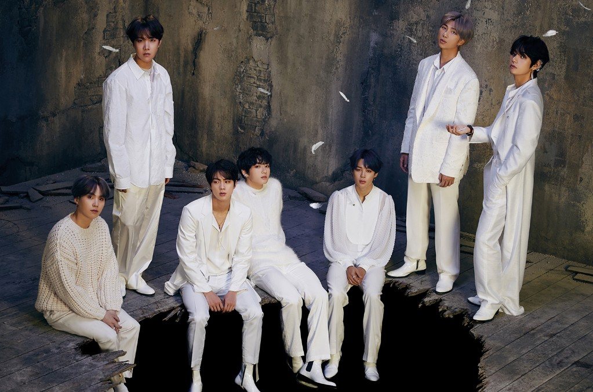
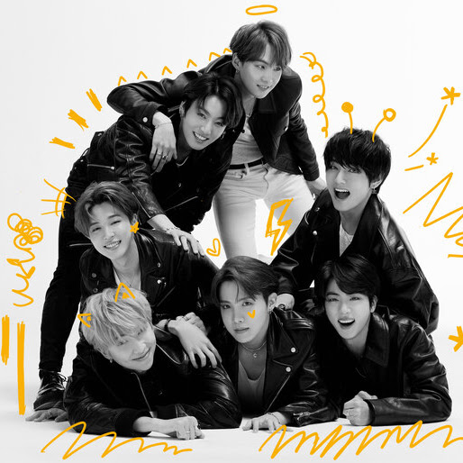

Whos BTS?
They are a 7 year old boy group that debuted in 2013. With the song No More Dream, and as they grew they gained more fans, their songs showed what people like, their album's with, "Love Yourself" actually taught ARMY's and other people to love themselves. the albums, "Love Yourself: Tear", "Love Yourself: Answer", and "Love: Yourself: Her"
What made them so popular?
The way they have different concepts every album, like the album Wings was a dark and sad concept, so they made the comeback with the song Blood, Sweat, and Tears They literally worked with Blood, Sweat and Tears over the years. It also made them popular because they composed their own songs and they broke many records like the most viewed music video in 24 hours, with the song Boy With Luv with 78 million views, and that actually caused YouTube to stop working for a while. But now, they have broken the most viewed video on YouTube with the new single, DYNAMITE with 101.1 million views in 24 hours.
What is their latest comeback
It was Map Of The Soul: 7, they named it this because it was celebrating their 7 years, with 7 members. They will have a new comeback called, "Dynamite" on August 21st, 2020.
Who are foreigners?
They are all from South Korea